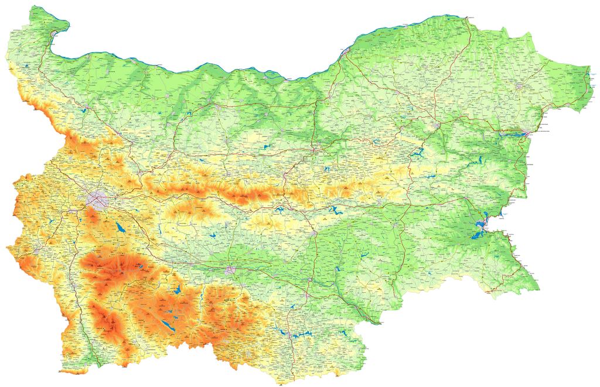

Bulgaria
История
Първа българска държава (681 – 1018 г.)
През 632 г. със създаването на Велика България са сложени основите на българската държавност. В хода на войната на Велика България
с хазарите, Аспарух, третият син на Кубрат, е изтласкан на югозапад към Дунава и се заселва в областта Онгъл. През лятото на 680 г.
византийският император Константин IV Погонат (668 – 685 г.) предприема поход срещу прабългарите. Поражението на византийците и покоряването
от страна на прабългарите на завареното население завършва със сключването на мирен договор през лятото на 681 г., чрез който Аспарухова
България е призната от Византия.
Втора българска държава (1185 – 1396 г.)
Втората българска държава (1185 – 1396), създадена от братята Асен и Петър след периода на византийското владичество (1018 – 1186), е със столица
Търновград. През XII век се укрепва държавата с военните успехи на цар Калоян над рицарите от Четвъртия кръстоносен поход и пленяването на императора на
Латинската империя Балдуин Фландърски през 1205 г.
През годините 1218-41 г. започва териториално разширение, стопанско и културно развитие при Йоан Асен II, както и възобновяване на Българската патриаршия.
Трета българска държава (след 1878 г.)
Последвалият Руско-турската война Берлински договор от 1878 година създава две държавни образувания с предимно
българско население и широка автономия в рамките на Османската империя – Княжество България и Източна Румелия,
които се обединяват през 1885 година. Новата българска държава получава либералнодемократично устройство с широки
избирателни права и многопартийна система, но и значително влияние на монарха. Първите години след нейното създаване
са период на политическа нестабилност,
чиято кулминация са международната Българска криза и кратката Сръбско-българска война.
Република България
Република България е държава в Югоизточна Европа. Разположена е в източната част на Балканския полуостров и заема 23% от неговата територия.
Граничи на север с Румъния; на запад – със Сърбия и Северна Македония; на юг – с Гърция и на югоизток – с Турция. На изток, по протежение на
бреговата ивица, страната се мие от водите на Черно море. Със своите почти 111 хил. km²
площ и 7 000 039 души (към 31 декември 2018 г.), България се подрежда на 11-о и 16-о място съответно по площ и по население в Европейския съюз.
